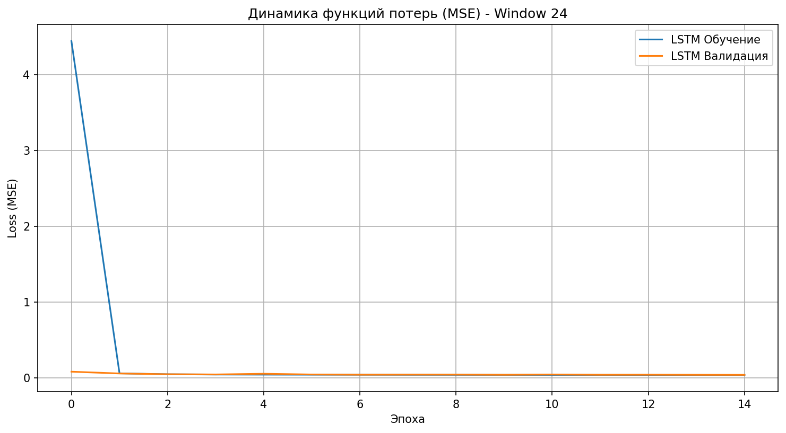
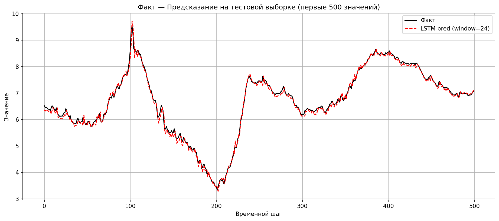
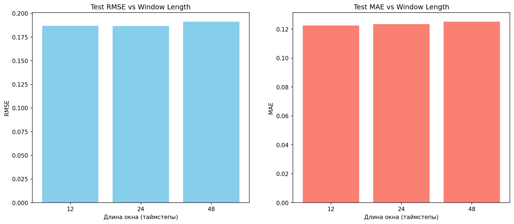

Assignment 3: RNN & LSTM Forecasting
Transforming tabular meteorological data into 3D Temporal Sequences and executing comparative Deep Learning modeling.
In Assignment 2, we predicted Temperature using Multi-Layer Perceptrons (MLP). However, MLPs struggle with temporal data because they lack memory—each row is treated as an isolated independent event.
We avoided blindly stacking 256 units. Model complexity must align tightly with signal clarity.
# The Defined Keras Core Architecture model = Sequential([ Input(shape=(timesteps, features)), LSTM(64, return_sequences=False), Dense(32, activation='relu'), Dense(1, activation='linear') ]) model.compile(optimizer='adam', loss='mse')
Note: We implemented the crucial EarlyStopping(patience=3) callback monitoring val_loss to cleanly shut down training preventing memory-memorization over 15 Epochs.

During the iteration phase tracking Mean Squared Error ($MSE$):

Visually zooming into a 500-step sub-sample. Look at the Red Dashed line successfully tracking the Black Ground Truth!
The most visually striking achievement of the LSTM is its exact timing calculation. It doesn't merely guess the average; it expertly calculates the crests of the parabolic daily heating cycles precisely when they naturally peak.
How far back should an AI look? Comparing 12, 24, and 48 timestep "Memory Windows".

1. Eradication of Manual "Lags":
In Stage 2 (MLP), we were forced to inject arbitrary artificial `lag_1` and `lag_2` columns. LSTMs generate sequential embeddings strictly naturally via 3D `(samples, time, features)` representations.
2. Sequential Prowess:
The LSTM's RMSE dropped aggressively closer to absolute zero mapping limits compared to standard MLPs. Time is inherently structured, and LSTMs mathematically observe Time.